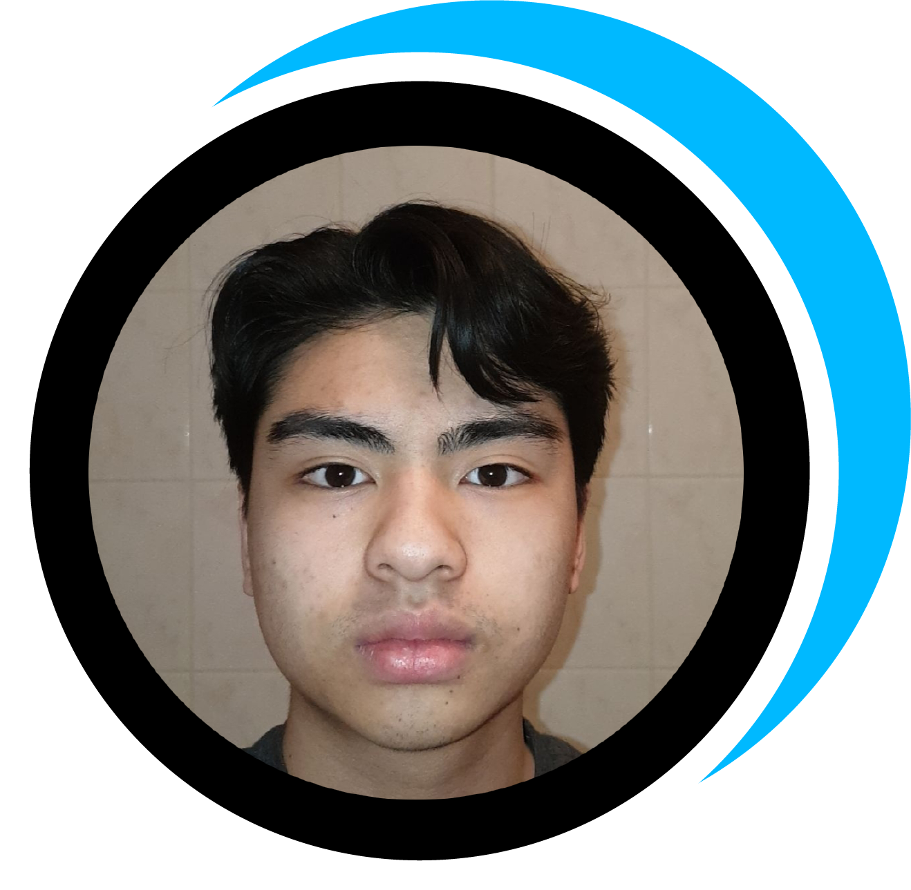

Mijn naam is Gavin en ik zit op het grafisch lyceum Utrecht, Ik volg hier de opleiding webdeveloper. Dit is mijn 2e jaar en hiervoor heb ik 1 jaar webdesign gevold.
Ik ben iemand die van een uitdaging houd en goed samen kan werken, maar het ook geen probleem vind om zelfstandig te werken. Verder wil ik mezelf altijd verbeteren en mijn kennis vergroten.